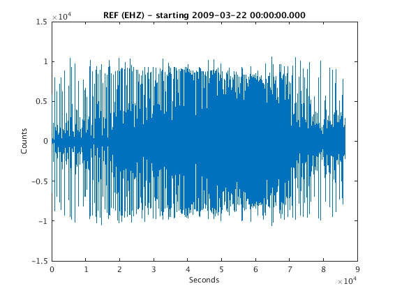
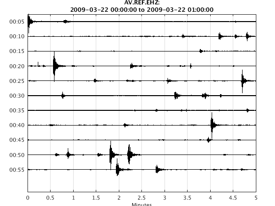
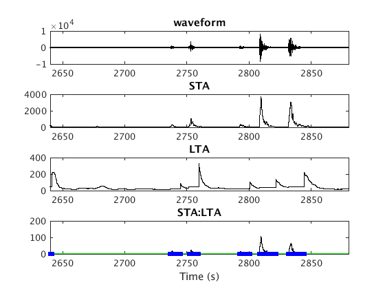
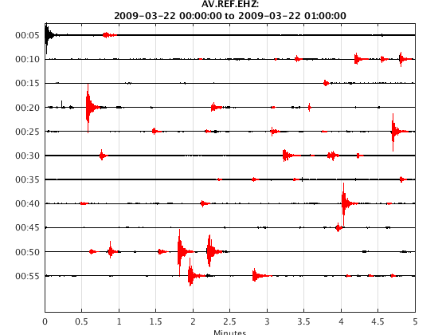

drumplot cookbook
In this example you will learn how to create a waveform object by loading a SAC file, extract 1 hour of data from that waveform object, and make a helical drum recorder plot using the drumplot class.
Another feature of drumplot is that it allows detected events, from a Catalog object, to be superimposed on the helicorder plot. In the example below this Catalog is generated by running an STA/LTA detection algorithm on the extracted 1-hour waveform object.
Contents
Load 1 day of data for REF.EHZ on 2009.03.22
% here we can either use scnlobject or ChannelTag to describe the % net-sta-loc-chan we want. waveform understands both. ctag = ChannelTag('AV.REF.-.EHZ') % starttime in MATLAB datenum format snum = datenum(2009,3,22); % endtime (1 day after start) enum=snum+1; % create the datasource object - in this case it is a SAC file ds = datasource('sac', 'SACDATA/REF.EHZ.2009-03-22T00:00:00.000000Z.sac'); % create the waveform object with this datasource, ChannelTag, starttime % and endtime w=waveform(ds, ctag, snum, enum);
ctag = <a href="matlab:help ChannelTag">ChannelTag</a> with network.station.location.channel: network: 'AV' station: 'REF' location: '-' channel: 'EHZ'
fill gaps, detrend, band pass filter
% in case there are gaps in the time series (marked by NaN) we can interpolate a % meaningful value w = fillgaps(w, 'interp'); % detrend the time series - this removes linear drift w = detrend(w); % create a Butterworth bandpass filter from 0.5 to 15 Hz, 2 poles fobj = filterobject('b', [0.5 15], 2); % apply the filter in both directions (acausal) - this is a zero phase % filter which is helpful because it doesn't disperse different frequency % components. the caveat is that it can spread energy so arrivals may appear % slighter earlier than they actually are w = filtfilt(fobj, w);
plot the waveform object
figure plot(w)
extract the first 1 hour of data and plot with 5 minutes per line
starttime = get(w,'start'); w2=extract(w, 'time', starttime, starttime + 1/24 ) % make a drumplot object. mpl means minutes per line and is set here to 5. h2 = drumplot(w2, 'mpl', 5); % plot the drumplot object - many events are visible, this is an earthquake % swarm plot(h2)
w2 =
ChannelTag: AV.REF..EHZ [network.station.location.channel]
start: 2009-03-22 00:00:00.000
duration(01:00:00.000)
data: 360000 samples
freq: 100.0000 Hz
units: Counts
history: [3 items], last modification: 22-Mar-2017 14:13:28
With misc fields...
* SCALE: 1
* NZYEAR: 2009
* NZJDAY: 81
* NZHOUR: 0
* NZMIN: 0
* NZSEC: 0
* NZMSEC: 0
* IFTYPE: 1
* IZTYPE: 9
* LPSPOL: 0
* LOVROK: 1
* LCALDA: 1
* KEVNM: -12345 -12345
 Run an STA/LTA detector on the waveform object to detect events
Compute STA/LTA ratio. In this example, trigger "ON" when STA/LTA exceeds 3, trigger "OFF" when this drops back below 1.5. If the trigger was on for at least 2 seconds, declare it as an event. All the events get saved into a Catalog object.
% set the STA/LTA detector sta_seconds = 0.7; % STA time window 0.7 seconds lta_seconds = 7.0; % LTA time window 7 seconds thresh_on = 3; % Event triggers "ON" with STA/LTA ratio exceeds 3 thresh_off = 1.5; % Event triggers "OFF" when STA/LTA ratio drops below 1.5 minimum_event_duration_seconds = 2.0; % Trigger must be on at least 2 secs pre_trigger_seconds = 0; % Do not pad before trigger post_trigger_seconds = 0; % Do not pad after trigger event_detection_params = [sta_seconds lta_seconds thresh_on thresh_off ... minimum_event_duration_seconds]; % run the STA/LTA detector. lta_mode = 'frozen' means the LTA stops % updating when trigger is "ON". [cobj,sta,lta,sta_to_lta] = Detection.sta_lta(w2, 'edp', event_detection_params, ... 'lta_mode', 'frozen'); % not sure what this is for set(gca, 'XLim', [44*60 48*60])
Event 1: 22-Mar-2009 00:00:47 to 22-Mar-2009 00:00:58 Event 2: 22-Mar-2009 00:07:05 to 22-Mar-2009 00:07:08 Event 3: 22-Mar-2009 00:08:06 to 22-Mar-2009 00:08:08 Event 4: 22-Mar-2009 00:08:23 to 22-Mar-2009 00:08:28 Event 5: 22-Mar-2009 00:09:11 to 22-Mar-2009 00:09:23 Event 6: 22-Mar-2009 00:09:32 to 22-Mar-2009 00:09:38 Event 7: 22-Mar-2009 00:09:47 to 22-Mar-2009 00:09:57 Event 8: 22-Mar-2009 00:13:46 to 22-Mar-2009 00:13:51 Event 9: 22-Mar-2009 00:15:34 to 22-Mar-2009 00:15:44 Event 10: 22-Mar-2009 00:17:15 to 22-Mar-2009 00:17:24 Got 46 events
Plot detected events on top of the continuous drumplot
h3 = drumplot(w2, 'mpl', 5, 'catalog', cobj); plot(h3)
Adding waveforms for each event in Catalog .............................................. (Complete)